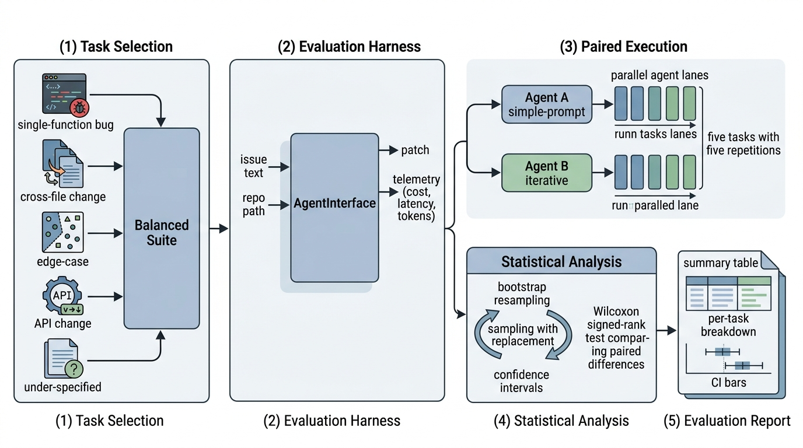

Prerequisites
This recipe synthesizes the entire chapter into a hands-on workflow. It assumes familiarity with Section 23.1 (task construction and evaluation harnesses) and Section 23.2 (validity threats and operational metrics). The statistical methods (bootstrap resampling, Wilcoxon signed-rank) require basic familiarity with hypothesis testing at the level of Chapter 5. The recipe produces a benchmark that integrates with the Discovery Workbench testing infrastructure introduced in Chapter 6.
Public benchmarks tell you which agent architecture is strongest on well-known Python libraries. Your own benchmark tells you which agent works best on your code. This section walks through the complete recipe: selecting five issues from your repository's history, constructing task instances with validated test oracles, running two competing agent workflows against the suite, and reporting the comparison with bootstrap confidence intervals and a Wilcoxon signed-rank test. The result is a statistically grounded recommendation, not a leaderboard anecdote. Figure 23.3.1 illustrates the end-to-end agent benchmark pipeline.

The end-to-end benchmark pipeline has six stages, from selecting tasks through delivering a statistical report. Figure 23.3 shows the complete flow and the data that passes between stages.
1. Task Selection Criteria
Your agent scores 49% on SWE-bench, where SWE-bench is a public benchmark of 2,294 real GitHub issues with validated patches used to evaluate coding agents, placing it near the top of public leaderboards. Yet it fails on three of the first five tickets you assign from your own repository. Which issues you choose for your internal benchmark determines whether you catch that gap or miss it entirely. The selection criteria from Section 23.1 apply: each issue must have a merged PR with test additions. The added tests serve as the test oracle (the authoritative check that determines whether a proposed patch is correct): they must fail on the base commit and pass after the fix. Beyond these mechanical requirements, a good five-issue suite covers a range of difficulty and task types.
For a minimal but informative benchmark, select one task from each of these categories:
- Single-function bug fix: a logic error in one function, fixable with fewer than 10 lines. This is your baseline; if an agent cannot handle this, it is not ready for your codebase.
- Cross-file change: a bug whose fix touches two or more files, requiring the agent to understand dependencies between modules.
- Edge-case handling: a task where the issue describes an input that causes unexpected behavior, and the fix adds input validation or boundary handling.
- API or interface change: a fix that modifies a function signature, return type, or error behavior, requiring updates to callers or documentation.
- Under-specified issue: a task with a brief or vague issue description (e.g., "X is broken when Y"), testing the agent's ability to investigate and locate the bug with minimal guidance.
This distribution ensures that the benchmark exercises different agent capabilities. An agent that aces single-function fixes but fails on cross-file changes has a specific weakness you need to know about before deployment. Conversely, an agent that handles under-specified issues well is likely to perform better in production, where issue descriptions are typically less detailed than in SWE-bench. In short: a benchmark measures the agent you deploy, not the agent you imagine.
"""
Task selection and benchmark construction from a Git repository.
Extracts candidate tasks from merged PRs and filters by category
to build a balanced five-issue evaluation suite.
"""
import subprocess
import json
import re
from dataclasses import dataclass, field, asdict
from pathlib import Path
from enum import Enum
class TaskCategory(Enum):
SINGLE_FUNCTION = "single_function"
CROSS_FILE = "cross_file"
EDGE_CASE = "edge_case"
API_CHANGE = "api_change"
UNDER_SPECIFIED = "under_specified"
@dataclass
class CandidateTask:
"""A potential benchmark task with metadata for selection."""
instance_id: str
pr_number: int
issue_title: str
issue_body: str
files_changed: list[str]
lines_added: int
lines_removed: int
test_files: list[str]
merge_commit: str
category: TaskCategory | None = None
@property
def num_source_files(self) -> int:
"""Number of non-test files changed."""
return len([f for f in self.files_changed
if f not in self.test_files])
@property
def total_churn(self) -> int:
return self.lines_added + self.lines_removed
@property
def description_length(self) -> int:
return len(self.issue_body.split())
def classify_candidate(task: CandidateTask) -> TaskCategory:
"""Assign a category to a candidate task based on heuristics.
Args:
task: The candidate task to classify.
Returns:
The most likely category based on structural properties.
"""
# Under-specified: very short issue body
if task.description_length < 30:
return TaskCategory.UNDER_SPECIFIED
# API change: modifies __init__.py, or changes function signatures
api_indicators = ["__init__.py", "api.py", "interface", "schema"]
if any(ind in f for f in task.files_changed for ind in api_indicators):
return TaskCategory.API_CHANGE
# Cross-file: changes multiple source files
if task.num_source_files >= 2:
return TaskCategory.CROSS_FILE
# Edge case: issue mentions "edge", "boundary", "empty", "None", etc.
edge_keywords = ["edge case", "boundary", "empty", "none", "null",
"zero", "negative", "overflow", "unicode"]
body_lower = task.issue_body.lower()
if any(kw in body_lower for kw in edge_keywords):
return TaskCategory.EDGE_CASE
# Default: single-function fix
return TaskCategory.SINGLE_FUNCTION
def select_benchmark_suite(
candidates: list[CandidateTask],
target_size: int = 5
) -> list[CandidateTask]:
"""Select a balanced benchmark suite from candidate tasks.
Picks one task per category, preferring tasks with moderate
difficulty (not trivially easy, not impossibly hard).
Args:
candidates: All candidate tasks from the repository.
target_size: Number of tasks to select (default 5).
Returns:
A balanced list of tasks covering different categories.
"""
# Classify all candidates
for c in candidates:
c.category = classify_candidate(c)
# Group by category
by_category: dict[TaskCategory, list[CandidateTask]] = {}
for c in candidates:
by_category.setdefault(c.category, []).append(c)
selected = []
# Take one from each category, preferring moderate churn
for cat in TaskCategory:
pool = by_category.get(cat, [])
if not pool:
continue
# Sort by total churn; pick the median-difficulty task
pool.sort(key=lambda t: t.total_churn)
median_idx = len(pool) // 2
selected.append(pool[median_idx])
# If we have fewer than target_size, fill from largest pools
while len(selected) < target_size:
remaining = [c for c in candidates if c not in selected]
if not remaining:
break
# Pick the task with the most moderate churn among remaining
remaining.sort(key=lambda t: t.total_churn)
selected.append(remaining[len(remaining) // 2])
return selected[:target_size]
Once you have selected your five tasks, verify that each task's test oracle is trustworthy before treating it as ground truth. For every candidate task, check out the base commit, confirm that the oracle tests fail, apply the merged patch, and confirm that the tests pass. If a test passes on the base commit (meaning it cannot distinguish buggy code from fixed code) or fails after the patch, that task's oracle is unreliable and must be replaced. Skipping this validation step is the single most common source of misleading benchmark results, as the SWE-bench Verified effort (discussed in the Research Frontier below) demonstrated at scale.
2. Building the Evaluation Harness
With five tasks selected, the next step is building a harness that runs agent workflows against them in isolated environments. The harness from Section 23.1 provides the core evaluation loop. Here we wrap it in a complete pipeline that: (1) sets up isolated working directories for each task, (2) invokes the agent workflow, (3) captures the agent's patch along with cost and latency telemetry, and (4) evaluates the patch against the test oracle.
The key design decision is the agent interface. Different agent frameworks (SWE-agent, Aider, Claude Code, custom pipelines) expose different APIs. Our harness defines a minimal interface: a function that takes an issue description and a repository path, and returns a patch string along with usage metadata. Any agent that can be wrapped in this interface can be evaluated.
"""
Complete evaluation harness for internal agent benchmarks.
Defines a standard agent interface, runs evaluations with
telemetry capture, and collects results for statistical analysis.
"""
import time
import json
import subprocess
import tempfile
import shutil
from abc import ABC, abstractmethod
from dataclasses import dataclass, asdict
from pathlib import Path
@dataclass
class AgentResult:
"""Result from an agent attempting a single task."""
patch: str
cost_usd: float
latency_seconds: float
input_tokens: int
output_tokens: int
tool_calls: int
error: str | None = None
class AgentInterface(ABC):
"""Standard interface for evaluating any coding agent."""
@abstractmethod
def solve(
self,
issue_text: str,
repo_path: str,
timeout: int = 600
) -> AgentResult:
"""Attempt to solve a coding task.
Args:
issue_text: The issue description (the agent's prompt).
repo_path: Path to a checkout at the base commit.
timeout: Maximum wall-clock seconds.
Returns:
AgentResult with the proposed patch and telemetry.
"""
...
class SimplePromptAgent(AgentInterface):
"""A single-pass agent that sends the issue to an LLM once."""
def __init__(self, model: str = "claude-sonnet-4-20250514"):
self.model = model
def solve(self, issue_text: str, repo_path: str,
timeout: int = 600) -> AgentResult:
from anthropic import Anthropic
client = Anthropic()
# Read relevant source files (simplified: read all .py files)
source_context = self._gather_context(repo_path)
start = time.time()
response = client.messages.create(
model=self.model,
max_tokens=8192,
messages=[{
"role": "user",
"content": (
f"Fix this issue in the repository.\n\n"
f"Issue:\n{issue_text}\n\n"
f"Repository structure and key files:\n"
f"{source_context}\n\n"
f"Return ONLY a unified diff (patch) that fixes "
f"the issue. No explanation."
)
}]
)
elapsed = time.time() - start
return AgentResult(
patch=response.content[0].text,
cost_usd=self._estimate_cost(response.usage),
latency_seconds=elapsed,
input_tokens=response.usage.input_tokens,
output_tokens=response.usage.output_tokens,
tool_calls=0
)
def _gather_context(self, repo_path: str,
max_files: int = 20) -> str:
"""Gather source file contents for context."""
py_files = sorted(Path(repo_path).rglob("*.py"))[:max_files]
parts = []
for f in py_files:
rel = f.relative_to(repo_path)
try:
content = f.read_text(encoding="utf-8", errors="replace")
parts.append(f"--- {rel} ---\n{content[:2000]}")
except Exception:
continue
return "\n\n".join(parts)
def _estimate_cost(self, usage) -> float:
"""Estimate API cost from token usage."""
# Approximate pricing for Claude Sonnet
input_cost = usage.input_tokens * 3.0 / 1_000_000
output_cost = usage.output_tokens * 15.0 / 1_000_000
return input_cost + output_cost
class IterativeAgent(AgentInterface):
"""A multi-step agent that reads files, runs tests, and iterates."""
def __init__(self, model: str = "claude-sonnet-4-20250514",
max_iterations: int = 5):
self.model = model
self.max_iterations = max_iterations
def solve(self, issue_text: str, repo_path: str,
timeout: int = 600) -> AgentResult:
from anthropic import Anthropic
client = Anthropic()
start = time.time()
total_input = 0
total_output = 0
tool_calls = 0
current_patch = ""
messages = [{
"role": "user",
"content": (
f"You are debugging a repository. The issue is:\n\n"
f"{issue_text}\n\n"
f"The repo is at: {repo_path}\n"
f"Use bash commands to explore the code, identify the "
f"bug, write a fix, and run the tests. When done, "
f"output the fix as a unified diff."
)
}]
for iteration in range(self.max_iterations):
if time.time() - start > timeout:
break
response = client.messages.create(
model=self.model,
max_tokens=4096,
messages=messages,
tools=[{
"name": "bash",
"description": "Run a bash command in the repo.",
"input_schema": {
"type": "object",
"properties": {
"command": {"type": "string"}
},
"required": ["command"]
}
}]
)
total_input += response.usage.input_tokens
total_output += response.usage.output_tokens
# Process tool calls
has_tool_use = False
for block in response.content:
if block.type == "tool_use":
has_tool_use = True
tool_calls += 1
cmd = block.input.get("command", "")
try:
result = subprocess.run(
cmd, shell=True, cwd=repo_path,
capture_output=True, text=True,
timeout=30
)
output = result.stdout + result.stderr
except subprocess.TimeoutExpired:
output = "Command timed out"
messages.append({
"role": "assistant",
"content": response.content
})
messages.append({
"role": "user",
"content": [{
"type": "tool_result",
"tool_use_id": block.id,
"content": output[:4000]
}]
})
elif block.type == "text":
current_patch = block.text
if not has_tool_use:
break # Agent is done
elapsed = time.time() - start
input_cost = total_input * 3.0 / 1_000_000
output_cost = total_output * 15.0 / 1_000_000
return AgentResult(
patch=current_patch,
cost_usd=input_cost + output_cost,
latency_seconds=elapsed,
input_tokens=total_input,
output_tokens=total_output,
tool_calls=tool_calls
)
AgentInterface. The SimplePromptAgent sends a single prompt with repository context. The IterativeAgent uses tool-calling to explore the repository, run tests, and iterate on its fix. Both capture cost and latency telemetry for the comparison analysis.
The from-scratch harness above illustrates the evaluation loop, but production agent
evaluation uses dedicated frameworks. The swebench package
(pip install swebench) handles Docker isolation, environment setup, and
parallel evaluation. For custom benchmarks, inspect-ai from UK AISI
(pip install inspect-ai) provides a general-purpose evaluation framework
with built-in support for coding tasks:
from inspect_ai import Task, task, eval
from inspect_ai.dataset import json_dataset
from inspect_ai.scorer import match
from inspect_ai.solver import generate
@task
def coding_benchmark():
return Task(
dataset=json_dataset("my_benchmark.json"),
solver=generate(),
scorer=match(),
)
# Run evaluation
results = eval(coding_benchmark(), model="anthropic/claude-sonnet-4-20250514")
inspect-ai: a @task decorator wires a JSON dataset to a solver and scorer, and the eval() call handles model invocation, logging, and result collection in one line.
The inspect-ai framework reduces the evaluation code from hundreds of
lines to a task definition and a one-line invocation. It handles model API calls,
result logging, scoring, and statistical analysis internally. For SWE-bench
specifically, the official harness remains the standard.
3. Running the Evaluation
With the harness built and two agents implemented, we run each agent against all five tasks. To support statistical analysis, we run each agent multiple times per task. Five repetitions per agent per task gives us 25 evaluation runs per agent (5 tasks x 5 repetitions), which provides enough data points for bootstrap confidence intervals on the resolve rate (though as Section 4 below shows, the resulting intervals will be wide). The resolve rate is the fraction of task attempts in which the agent produces a patch that passes all oracle tests. The same paired structure supports the Wilcoxon signed-rank test on paired comparisons.
"""
Evaluation runner: executes two agent workflows against a
five-task benchmark suite with multiple repetitions per task.
Collects paired results for statistical comparison.
"""
import json
from dataclasses import dataclass, asdict
from pathlib import Path
@dataclass
class PairedResult:
"""Paired evaluation results for one task, one repetition."""
instance_id: str
repetition: int
agent_a_resolved: bool
agent_b_resolved: bool
agent_a_cost: float
agent_b_cost: float
agent_a_latency: float
agent_b_latency: float
def run_evaluation(
tasks: list["TaskInstance"],
agent_a: AgentInterface,
agent_b: AgentInterface,
repo_path: str,
repetitions: int = 5,
output_path: str = "eval_results.json"
) -> list[PairedResult]:
"""Run a paired evaluation of two agents on a task suite.
Each agent attempts each task multiple times. Results are
paired by (task, repetition) for statistical comparison.
Args:
tasks: The benchmark task instances.
agent_a: First agent workflow.
agent_b: Second agent workflow.
repo_path: Path to a clean clone of the repository.
repetitions: Number of attempts per agent per task.
output_path: Where to save results as JSON.
Returns:
List of PairedResult objects for statistical analysis.
"""
paired_results = []
for task in tasks:
print(f"\nEvaluating task: {task.instance_id}")
for rep in range(repetitions):
print(f" Repetition {rep + 1}/{repetitions}")
# Run Agent A
result_a = agent_a.solve(task.issue_text, repo_path)
eval_a = evaluate_patch(task, result_a.patch, repo_path)
# Run Agent B
result_b = agent_b.solve(task.issue_text, repo_path)
eval_b = evaluate_patch(task, result_b.patch, repo_path)
paired_results.append(PairedResult(
instance_id=task.instance_id,
repetition=rep,
agent_a_resolved=eval_a.passed,
agent_b_resolved=eval_b.passed,
agent_a_cost=result_a.cost_usd,
agent_b_cost=result_b.cost_usd,
agent_a_latency=result_a.latency_seconds,
agent_b_latency=result_b.latency_seconds,
))
# Save results
with open(output_path, "w") as f:
json.dump([asdict(r) for r in paired_results], f, indent=2)
return paired_results
The evaluation runner produces raw paired outcomes, but raw pass/fail counts do not tell you how much to trust the result; for that, you need a way to quantify the uncertainty inherent in a small sample.
4. Bootstrap Confidence Intervals
Teams routinely pick an agent based on a five-task trial, only to discover months later that the "winner" underperforms on the task types that matter most. Without statistical guardrails, a benchmark this small is indistinguishable from a coin toss. With only five tasks, the sample size is too small for the Central Limit Theorem (the result that sample means approach a normal distribution as sample size grows) to guarantee that the sampling distribution of the resolve rate is normal. The bootstrap provides an alternative: resample the observed results with replacement thousands of times, compute the resolve rate for each resample, and use the distribution of resampled rates as an estimate of the true sampling distribution.
The bootstrap estimates the variability of a statistic (here, the resolve rate) without assuming any particular distribution in the underlying data. It matters because agent benchmark results are discrete pass/fail outcomes on a handful of tasks, a setting where classical normal-approximation intervals perform poorly or break entirely. The mechanism: draw \(B\) samples of size \(n\) from the observed outcomes with replacement. Compute the statistic of interest for each sample. Use the empirical percentiles of those \(B\) values as confidence bounds. Use the bootstrap whenever your sample size is too small for asymptotic methods (roughly \(n < 30\)), or whenever the quantity you are estimating has no convenient closed-form sampling distribution; for large samples with well-behaved distributions, classical \(z\)- or \(t\)-intervals are faster and equally valid.
Checkpoint
So far: with only five tasks, classical normal-approximation intervals are unreliable, so the bootstrap resamples observed outcomes thousands of times to build an empirical sampling distribution whose percentiles serve as confidence bounds.
From Resampling to Confidence Bounds
The bootstrap works by treating our observed data as a stand-in for the true population. If we observed 3 passes out of 5 tasks, we create a "population" of [1, 1, 1, 0, 0] (where 1 means pass and 0 means fail). We draw 5 values from this population with replacement, compute the mean (the resolve rate for this resample), and repeat 10,000 times. The 2.5th and 97.5th percentiles of the resulting distribution form a 95% confidence interval.
Formally, let \(\hat{\theta}\) be the observed resolve rate and \(\hat{\theta}_1^*, \hat{\theta}_2^*, \ldots, \hat{\theta}_B^*\) be the resolve rates computed from \(B\) bootstrap resamples. The percentile bootstrap confidence interval at level \(1 - \alpha\) is:
$$CI_{1-\alpha} = \left[ \hat{\theta}^*_{(\alpha/2)}, \; \hat{\theta}^*_{(1-\alpha/2)} \right]$$where \(\hat{\theta}^*_{(q)}\) denotes the \(q\)-th quantile of the bootstrap distribution. For a 95% interval, \(\alpha = 0.05\), so we take the 2.5th and 97.5th percentiles.
"""
Bootstrap confidence intervals for agent evaluation metrics.
Handles small sample sizes (as few as 5 tasks) by resampling
with replacement to estimate the sampling distribution.
"""
import random
import statistics
from dataclasses import dataclass
@dataclass
class BootstrapCI:
"""Bootstrap confidence interval for a metric."""
point_estimate: float
ci_lower: float
ci_upper: float
ci_level: float
num_bootstrap_samples: int
def __repr__(self) -> str:
return (
f"{self.point_estimate:.1%} "
f"[{self.ci_lower:.1%}, {self.ci_upper:.1%}] "
f"({self.ci_level:.0%} CI)"
)
def bootstrap_resolve_rate(
outcomes: list[bool],
num_samples: int = 10_000,
ci_level: float = 0.95,
seed: int = 42
) -> BootstrapCI:
"""Compute a bootstrap confidence interval for the resolve rate.
Args:
outcomes: List of pass/fail outcomes (True = resolved).
num_samples: Number of bootstrap resamples.
ci_level: Confidence level (e.g., 0.95 for 95% CI).
seed: Random seed for reproducibility.
Returns:
BootstrapCI with point estimate and interval bounds.
"""
rng = random.Random(seed)
n = len(outcomes)
point_estimate = sum(outcomes) / n
# Generate bootstrap distribution
boot_rates = []
for _ in range(num_samples):
resample = rng.choices(outcomes, k=n)
boot_rates.append(sum(resample) / n)
boot_rates.sort()
alpha = 1 - ci_level
lower_idx = int(num_samples * alpha / 2)
upper_idx = int(num_samples * (1 - alpha / 2))
return BootstrapCI(
point_estimate=point_estimate,
ci_lower=boot_rates[lower_idx],
ci_upper=boot_rates[upper_idx],
ci_level=ci_level,
num_bootstrap_samples=num_samples
)
def bootstrap_cost_efficiency(
outcomes: list[bool],
costs: list[float],
num_samples: int = 10_000,
ci_level: float = 0.95,
seed: int = 42
) -> BootstrapCI:
"""Bootstrap CI for cost efficiency (resolved tasks per dollar).
Args:
outcomes: List of pass/fail outcomes.
costs: Corresponding per-task costs in USD.
num_samples: Number of bootstrap resamples.
ci_level: Confidence level.
seed: Random seed.
Returns:
BootstrapCI for the cost efficiency metric.
"""
rng = random.Random(seed)
n = len(outcomes)
total_resolved = sum(outcomes)
total_cost = sum(costs)
point_estimate = total_resolved / total_cost if total_cost > 0 else 0
boot_efficiencies = []
indices = list(range(n))
for _ in range(num_samples):
resample_idx = rng.choices(indices, k=n)
boot_resolved = sum(outcomes[i] for i in resample_idx)
boot_cost = sum(costs[i] for i in resample_idx)
if boot_cost > 0:
boot_efficiencies.append(boot_resolved / boot_cost)
else:
boot_efficiencies.append(0)
boot_efficiencies.sort()
alpha = 1 - ci_level
lower_idx = int(num_samples * alpha / 2)
upper_idx = int(num_samples * (1 - alpha / 2))
return BootstrapCI(
point_estimate=point_estimate,
ci_lower=boot_efficiencies[lower_idx],
ci_upper=boot_efficiencies[upper_idx],
ci_level=ci_level,
num_bootstrap_samples=num_samples
)
# Example with realistic data
outcomes_a = [True, True, False, True, False] # Agent A: 3/5
outcomes_b = [True, False, True, True, True] # Agent B: 4/5
ci_a = bootstrap_resolve_rate(outcomes_a)
ci_b = bootstrap_resolve_rate(outcomes_b)
print(f"Agent A resolve rate: {ci_a}")
print(f"Agent B resolve rate: {ci_b}")
# Agent A resolve rate: 60.0% [20.0%, 100.0%] (95% CI)
# Agent B resolve rate: 80.0% [40.0%, 100.0%] (95% CI)
# Note: wide intervals reflect the small sample size (n=5)
bootstrap_cost_efficiency function extends the same resampling logic to a ratio metric (resolved tasks per dollar), demonstrating how the bootstrap generalizes to any computable statistic.Common Misconception
Readers often believe that increasing the number of bootstrap resamples (e.g., from 10,000 to 100,000) will narrow the confidence interval and yield a more precise estimate. This is wrong: more resamples make the interval boundaries more stable (less jitter between runs), but they cannot shrink the interval itself. The width of the interval is determined by the variability in your original data, which is fixed by the number of tasks (\(n\)). To get a narrower confidence interval, you need more original observations (more benchmark tasks), not more resamples of the same small dataset.
The bootstrap does not magically create precision from small samples. With 5 tasks, a 95% confidence interval for a 60% resolve rate might span from 20% to 100%. This wide interval is the honest answer: you genuinely do not know the agent's true resolve rate with much precision. The value of the bootstrap is that it quantifies this uncertainty rather than hiding it behind a point estimate. Reporting "60% (95% CI: 20%,100%)" is far more informative than reporting "60%" alone. To narrow the interval, you need more tasks, which motivates expanding your internal benchmark over time.
Step-Through: Bootstrap Resampling
Trace through one bootstrap iteration with a tiny example. Suppose an agent's outcomes on 5 tasks are [1, 1, 0, 1, 0] (3 passes, resolve rate = 0.60). One resample drawn with replacement: [1, 0, 1, 1, 1], giving a resampled rate of 4/5 = 0.80. A second resample: [0, 0, 1, 0, 1], rate = 2/5 = 0.40. A third: [1, 1, 1, 0, 0], rate = 3/5 = 0.60. After 10,000 such draws, with only 3 distinct values in the original data, the bootstrap distribution concentrates on the set {0.0, 0.2, 0.4, 0.6, 0.8, 1.0}. Sorting all 10,000 resampled rates and reading off position 250 (2.5th percentile) gives 0.20; position 9750 (97.5th percentile) gives 1.00. The 95% CI is [20%, 100%]. Notice that the interval is wide precisely because \(n = 5\): no amount of resampling can manufacture precision that the original data lack.
5. The Wilcoxon Signed-Rank Test
Bootstrap confidence intervals tell you about each agent's performance in isolation. The Wilcoxon signed-rank test tells you whether one agent is systematically better than the other on the same tasks. It is a non-parametric test, where non-parametric means it makes no assumptions about the mathematical form of the underlying distribution, for paired samples: it requires no assumptions about normality, which is important because pass/fail outcomes on coding tasks are not normally distributed.
The test works with paired observations. For each task, we compute a score difference between Agent A and Agent B. The score can be binary (1 if resolved, 0 if not), giving a difference in {-1, 0, 1}, or continuous (e.g., the time to resolution), giving real-valued differences. The test then asks: is the median of these differences significantly different from zero? (With only five tasks and two ties, you have just three non-tied pairs, and the critical value of \(W\) (the threshold the statistic must fall below to reject the null) at \(\alpha = 0.05\) drops to zero: every single non-tied difference must favor the same agent to reach significance.)
Mental Model
Think of the Wilcoxon signed-rank test like a blind taste test between two coffee blends. You give five people both blends (paired samples) and ask each person to rate the difference. You do not care about the raw scores, only whether each taster preferred blend A or blend B and by how much. You then rank the strength of each preference, ignoring anyone who said "no difference." If most of the strong preferences point the same direction, you conclude one blend is systematically better. The test works the same way with agents: each task is a taster, the difference in resolve rate is the preference, and ties (both agents pass or both fail) are discarded. What matters is whether the non-tied differences consistently favor one agent, weighted by their magnitude.
Translating the coffee analogy into a formal procedure, the signed-rank test works as follows:
- For each task \(i\), compute the difference \(d_i = \text{score}_A(i) - \text{score}_B(i)\).
- Discard pairs where \(d_i = 0\) (ties). Let \(n_r\) be the number of remaining pairs.
- Rank the absolute differences \(|d_1|, |d_2|, \ldots, |d_{n_r}|\).
- Compute \(W^+ = \sum_{d_i > 0} R_i\) (sum of ranks for positive differences) and \(W^- = \sum_{d_i < 0} R_i\) (sum of ranks for negative differences).
- The test statistic is \(W = \min(W^+, W^-)\). Under the null hypothesis (no systematic difference), \(W\) follows the Wilcoxon signed-rank distribution.
"""
Wilcoxon signed-rank test for paired agent comparison.
Tests whether one agent is systematically better than another
on the same set of tasks, without assuming normality.
"""
from scipy import stats
from dataclasses import dataclass
@dataclass
class ComparisonResult:
"""Result of a paired agent comparison."""
agent_a_name: str
agent_b_name: str
num_tasks: int
agent_a_wins: int
agent_b_wins: int
ties: int
wilcoxon_statistic: float | None
p_value: float | None
significant_at_05: bool
effect_direction: str # "A > B", "B > A", or "no difference"
resolve_rate_a: float
resolve_rate_b: float
ci_a: "BootstrapCI"
ci_b: "BootstrapCI"
def compare_agents(
paired_results: list[PairedResult],
agent_a_name: str = "Agent A",
agent_b_name: str = "Agent B",
alpha: float = 0.05
) -> ComparisonResult:
"""Compare two agents using the Wilcoxon signed-rank test.
Aggregates per-task outcomes across repetitions, then tests
whether the difference in resolve rates is significant.
Args:
paired_results: Paired evaluation results from run_evaluation.
agent_a_name: Display name for Agent A.
agent_b_name: Display name for Agent B.
alpha: Significance level for the test.
Returns:
ComparisonResult with test statistics and interpretation.
"""
# Aggregate outcomes per task (average across repetitions)
task_ids = sorted(set(r.instance_id for r in paired_results))
scores_a = []
scores_b = []
for tid in task_ids:
task_results = [r for r in paired_results
if r.instance_id == tid]
# Per-task resolve rate across repetitions
rate_a = sum(r.agent_a_resolved for r in task_results) / len(task_results)
rate_b = sum(r.agent_b_resolved for r in task_results) / len(task_results)
scores_a.append(rate_a)
scores_b.append(rate_b)
# Compute differences for the Wilcoxon test
differences = [a - b for a, b in zip(scores_a, scores_b)]
a_wins = sum(1 for d in differences if d > 0)
b_wins = sum(1 for d in differences if d < 0)
ties = sum(1 for d in differences if d == 0)
# Run the Wilcoxon signed-rank test
# Need at least one non-zero difference
non_zero = [d for d in differences if d != 0]
if len(non_zero) < 2:
w_stat = None
p_val = None
significant = False
else:
try:
w_stat, p_val = stats.wilcoxon(
scores_a, scores_b,
alternative="two-sided",
zero_method="wilcox"
)
significant = p_val < alpha
except ValueError:
# All differences are zero
w_stat = None
p_val = None
significant = False
# Bootstrap CIs for each agent
all_a = [r.agent_a_resolved for r in paired_results]
all_b = [r.agent_b_resolved for r in paired_results]
ci_a = bootstrap_resolve_rate(all_a)
ci_b = bootstrap_resolve_rate(all_b)
# Determine effect direction
if significant and sum(differences) > 0:
direction = f"{agent_a_name} > {agent_b_name}"
elif significant and sum(differences) < 0:
direction = f"{agent_b_name} > {agent_a_name}"
else:
direction = "no significant difference"
return ComparisonResult(
agent_a_name=agent_a_name,
agent_b_name=agent_b_name,
num_tasks=len(task_ids),
agent_a_wins=a_wins,
agent_b_wins=b_wins,
ties=ties,
wilcoxon_statistic=w_stat,
p_value=p_val,
significant_at_05=significant,
effect_direction=direction,
resolve_rate_a=ci_a.point_estimate,
resolve_rate_b=ci_b.point_estimate,
ci_a=ci_a,
ci_b=ci_b
)
ComparisonResult object for the report generator.Exercise 23.3.1
You run two agents on a 5-task benchmark with 5 repetitions each. Agent A resolves tasks at rates [1.0, 0.8, 0.0, 0.6, 0.4] and Agent B at rates [0.8, 0.8, 0.2, 0.6, 0.6] (per-task averages across repetitions). Compute the paired differences, identify ties, rank the absolute non-zero differences, and calculate \(W^+\) and \(W^-\) by hand. Is the result significant at \(\alpha = 0.05\)? (The critical value of \(W\) for \(n_r = 3\) at \(\alpha = 0.05\) two-sided is 0.)
Hint
The differences are [0.2, 0.0, -0.2, 0.0, -0.2]. Two pairs are ties (\(d = 0\)), leaving \(n_r = 3\) non-zero differences. Rank the absolute values: |0.2|, |0.2|, |0.2| all tie at rank 2 (the average of ranks 1, 2, 3). \(W^+\) sums the ranks of positive differences (one difference of +0.2, rank 2), and \(W^-\) sums the ranks of negative differences (two differences of -0.2, ranks 2 + 2 = 4). So \(W = \min(2, 4) = 2\). Since \(W = 2 > 0\) (the critical value), we fail to reject the null: no significant difference.
Confidence intervals and significance tests produce numbers, but numbers alone do not drive decisions; the final step is packaging those statistics into a report that stakeholders can act on.
6. The Evaluation Report
The final step is assembling the results into a report that communicates both the findings and their limitations. A good evaluation report answers three questions: Which agent performed better on this benchmark? How confident are we in that conclusion? And what caveats should guide deployment decisions?
"""
Evaluation report generator: produces a structured report
from paired agent comparison results, including statistical
summaries, per-task breakdowns, and deployment recommendations.
"""
def generate_report(
comparison: ComparisonResult,
paired_results: list[PairedResult],
output_path: str = "evaluation_report.md"
) -> str:
"""Generate a Markdown evaluation report.
Args:
comparison: The statistical comparison result.
paired_results: Raw paired results for per-task detail.
output_path: Where to write the report.
Returns:
The report text as a string.
"""
lines = [
"# Agent Evaluation Report",
"",
"## Summary",
"",
f"| Metric | {comparison.agent_a_name} | {comparison.agent_b_name} |",
"|--------|----------|----------|",
f"| Resolve rate | {comparison.ci_a} | {comparison.ci_b} |",
f"| Tasks won | {comparison.agent_a_wins} | {comparison.agent_b_wins} |",
f"| Ties | {comparison.ties} | {comparison.ties} |",
"",
]
# Statistical test result
if comparison.p_value is not None:
lines.extend([
"## Statistical Comparison",
"",
f"Wilcoxon signed-rank test: W = {comparison.wilcoxon_statistic:.1f}, "
f"p = {comparison.p_value:.4f}",
"",
f"Result: **{comparison.effect_direction}** "
f"(alpha = 0.05)",
"",
])
else:
lines.extend([
"## Statistical Comparison",
"",
"Insufficient non-tied pairs for Wilcoxon test.",
f"Result: **{comparison.effect_direction}**",
"",
])
# Per-task breakdown
lines.extend(["## Per-Task Breakdown", ""])
task_ids = sorted(set(r.instance_id for r in paired_results))
lines.append(
"| Task | Agent A Rate | Agent B Rate | Winner |"
)
lines.append("|------|-------------|-------------|--------|")
for tid in task_ids:
task_results = [r for r in paired_results
if r.instance_id == tid]
rate_a = sum(r.agent_a_resolved for r in task_results) / len(task_results)
rate_b = sum(r.agent_b_resolved for r in task_results) / len(task_results)
if rate_a > rate_b:
winner = comparison.agent_a_name
elif rate_b > rate_a:
winner = comparison.agent_b_name
else:
winner = "Tie"
lines.append(
f"| {tid} | {rate_a:.0%} | {rate_b:.0%} | {winner} |"
)
# Cost comparison
cost_a = sum(r.agent_a_cost for r in paired_results)
cost_b = sum(r.agent_b_cost for r in paired_results)
latency_a = sum(r.agent_a_latency for r in paired_results) / len(paired_results)
latency_b = sum(r.agent_b_latency for r in paired_results) / len(paired_results)
lines.extend([
"",
"## Operational Metrics",
"",
f"| Metric | {comparison.agent_a_name} | {comparison.agent_b_name} |",
"|--------|----------|----------|",
f"| Total cost | ${cost_a:.2f} | ${cost_b:.2f} |",
f"| Mean latency | {latency_a:.1f}s | {latency_b:.1f}s |",
"",
])
# Caveats
lines.extend([
"## Caveats",
"",
f"- Sample size: {comparison.num_tasks} tasks with 5 repetitions each.",
"- Confidence intervals are wide due to small sample size.",
"- Results apply to this specific repository and task distribution.",
"- Public benchmark scores may differ substantially.",
"- Cost estimates use list API pricing; volume discounts may apply.",
"",
])
report = "\n".join(lines)
with open(output_path, "w") as f:
f.write(report)
return report
A team at a biotech startup wants to evaluate whether to adopt a multi-step coding agent
for their computational biology codebase. They select five resolved issues from their
molsim repository: a unit conversion bug (single-function), a coordinate
system mismatch (cross-file), a missing NaN check in input parsing (edge case), a
function signature change for a new output format (API change), and a terse bug report
that reads "energy minimization diverges on large proteins" (under-specified). They run
a single-pass Claude Sonnet agent and a multi-step agent with tool use, each 5 times
per task. The single-pass agent resolves 40% of tasks (95% CI: 24%, 56%) at \$0.12/task.
The multi-step agent resolves 52% (95% CI: 36%, 68%) at \$0.85/task. The Wilcoxon test
yields \(p = 0.18\), indicating no statistically significant difference at \(\alpha = 0.05\).
The honest conclusion: the multi-step agent shows a promising trend, but the evidence
is too weak (and the cost increase too large) to justify adoption based on this
benchmark alone. They decide to expand the benchmark to 15 tasks and re-evaluate.
7. CI/CD Integration with GitHub Actions
In practice, a benchmark that runs only manually tends to stop being maintained. Integrating the evaluation harness into your CI/CD pipeline ensures that agent performance is tracked continuously. Every time a new agent version is released, or your codebase changes significantly, the benchmark runs automatically and flags regressions.
# .github/workflows/agent-benchmark.yml
# Runs the internal agent benchmark on a schedule
# and on manual trigger for new agent versions.
name: Agent Benchmark
on:
schedule:
- cron: '0 3 * * 1' # Weekly on Monday at 3 AM
workflow_dispatch: # Manual trigger for new agent versions
inputs:
agent_version:
description: 'Agent version or commit to evaluate'
required: true
type: string
jobs:
benchmark:
runs-on: ubuntu-latest
timeout-minutes: 120
steps:
- name: Checkout repository
uses: actions/checkout@v4
with:
fetch-depth: 0 # Full history for task construction
- name: Set up Python
uses: actions/setup-python@v5
with:
python-version: '3.12'
- name: Install dependencies
run: |
pip install pytest scipy anthropic
pip install -r requirements.txt
- name: Run agent benchmark
env:
ANTHROPIC_API_KEY: ${{ secrets.ANTHROPIC_API_KEY }}
run: |
python scripts/run_benchmark.py \
--tasks benchmark/tasks.json \
--agents simple,iterative \
--repetitions 5 \
--output benchmark/results.json
- name: Generate report
run: |
python scripts/generate_report.py \
--results benchmark/results.json \
--output benchmark/report.md
- name: Upload results
uses: actions/upload-artifact@v4
with:
name: benchmark-results
path: |
benchmark/results.json
benchmark/report.md
- name: Comment on PR (if triggered by PR)
if: github.event_name == 'pull_request'
uses: actions/github-script@v7
with:
script: |
const fs = require('fs');
const report = fs.readFileSync('benchmark/report.md', 'utf8');
github.rest.issues.createComment({
issue_number: context.issue.number,
owner: context.repo.owner,
repo: context.repo.repo,
body: report
});
The Benchmark That Benchmarked Itself
When the original SWE-bench paper (Jimenez et al., 2024) reported that the best agent resolved only 3.97% of tasks, many teams rushed to improve that number. Within a year, top agents exceeded 40% (as of mid-2025, leading agents surpass 50% on SWE-bench Verified). But SWE-bench Verified (Chandra et al., 2024) later revealed that roughly a quarter of the original tasks had flawed test oracles: tests that could pass with incorrect patches or fail on correct ones. Some agents had been "gaming" weak oracles rather than truly fixing bugs. The benchmark designed to measure agent reliability had its own reliability problem, a reminder that evaluating evaluators is just as hard as evaluating the systems they measure.
8. Discovery Workbench Integration
The evaluation harness we built in this section becomes a component of the Discovery Workbench, the platform that grows across the book. Specifically, the benchmark system provides three capabilities to the Workbench:
- Agent selection: when the Workbench dispatches a coding task to an agent (as in the multi-agent teams of Chapter 17), the benchmark results inform which agent architecture to use for which task type.
- Regression detection: when a new model version is released or the Workbench codebase changes, the benchmark suite detects whether agent performance has improved or degraded.
- Cost budgeting: the cost-per-task metrics feed into the operational monitoring from Chapter 22, enabling cost-aware task routing.
These capabilities become critical in Chapter 24: Autonomous Software Organizations, where agents operate with minimal human oversight. There, the benchmark acts as the acceptance gate: a workflow deploys only if its score exceeds a threshold, and rolls back automatically when regression tests fail.
Real-World Application: Cognition Labs' Devin Evaluation
Cognition Labs used SWE-bench to evaluate Devin, their autonomous software engineering agent, reporting a 13.86% unassisted resolve rate on SWE-bench Lite (not the full benchmark) in early 2024. Crucially, they paired the headline number with per-repository breakdowns, revealing that Devin solved over 30% of tasks in some repositories (notably django/django) but under 5% in others with less common tooling. This category-level disaggregation, the same technique presented in this section's task selection criteria, drove their engineering priorities: they focused subsequent iterations on the repository types where the agent underperformed, rather than optimizing for the aggregate score.
Current agent benchmarks evaluate individual task resolution: can the agent fix this one issue? But production agent deployment involves sequences of tasks on evolving codebases, where each fix affects the context for subsequent tasks. SWE-bench Verified (Chandra et al., 2024) addressed a key weakness of the original SWE-bench by having human annotators validate that each task's test oracle is correct and unambiguous, filtering out roughly 25% of tasks with flawed or misleading tests. This curation step revealed that many reported resolve-rate gains on the original benchmark were inflated by agents exploiting weak oracles rather than producing correct fixes. The lesson for internal benchmarks is direct: oracle quality bounds evaluation quality, and human review of your test suite is not optional. Beyond single-task validity, sequential evaluation benchmarks (Wang et al., 2025) present agents with a queue of issues on the same repository, measuring whether fixes introduce new bugs, conflict with each other, or degrade code quality over time. This sequential setting connects to the evaluation of discovery systems in Part VII, where the question shifts from "did the agent produce a correct output?" to "did the agent's sequence of actions advance scientific understanding?" The statistical methods from this section (bootstrap CIs, paired tests) extend naturally to sequential metrics like cumulative resolve rate and regression-free streaks.
Try It: Bootstrap Your Own Resolve-Rate Interval
Build a miniature agent benchmark analysis pipeline using only Python's standard library and scipy.
- Create synthetic data. Define two lists of 10 Boolean outcomes representing two agents' pass/fail results on 10 tasks (e.g.,
agent_a = [True, True, False, True, False, True, False, True, True, False]). Make Agent B slightly better overall but weaker on the last three tasks. - Implement the bootstrap. Write a function that takes a list of Booleans, resamples with replacement 10,000 times using
random.choices, computes the mean of each resample, and returns the 2.5th and 97.5th percentiles via sorted indexing. Print the 95% CI for both agents. - Run the Wilcoxon test. Pair the two outcome lists by task index and call
scipy.stats.wilcoxonon the paired differences. Print the test statistic and p-value. Observe whether the difference is significant at \(\alpha = 0.05\). - Vary sample size. Duplicate your 10-task data to simulate 20 and 40 tasks (keeping the same resolve rates). Re-run the bootstrap and Wilcoxon test at each size. Plot or print how the CI width and p-value change as \(n\) grows.
- Interpret. Write three sentences summarizing: (a) whether Agent B is significantly better, (b) at what sample size the difference becomes significant, and (c) what this implies for the minimum viable size of an internal benchmark.
Lab: Benchmark Sensitivity to Task Selection
Goal: Discover how much an agent's reported resolve rate changes when you swap even one task in a five-task benchmark.
Tools needed: Python 3.10+, scipy, random (standard library). No API keys required; you will use simulated agent outcomes.
Setup (5 min): Create a pool of 20 simulated tasks. For each task, assign a "true" pass probability for Agent A (drawn uniformly from 0.2 to 0.9) and for Agent B (Agent A's probability plus a random offset in [-0.2, +0.2], clipped to [0, 1]). For each task and agent, simulate 5 repetitions by drawing Bernoulli outcomes from the true probability.
What to vary (15 min): Draw 200 random subsets of 5 tasks from the pool of 20. For each subset, compute the bootstrap 95% CI for both agents' resolve rates and run the Wilcoxon signed-rank test on the paired differences. Record: (a) the point estimate difference between agents, (b) the CI width, and (c) whether the Wilcoxon test is significant at \(\alpha = 0.05\).
What to observe: Plot a histogram of the 200 point-estimate differences. Count how many subsets yield "Agent A wins," "Agent B wins," and "no significant difference." You should find that the same pair of agents can appear significantly better, significantly worse, or indistinguishable depending on which 5 tasks you happen to pick. This demonstrates why task selection criteria (Section 1 above) and sample size both matter for benchmark validity.
Exercises
- Conceptual: A bootstrap 95% confidence interval for an agent's resolve rate is [20%, 100%]. Your manager asks "so is this agent better than random?" (A random agent on binary tasks has an expected resolve rate near 0%.) What is the correct statistical answer, and what would you recommend as the next step to narrow the interval?
-
Coding: Implement a function
stratified_bootstrapthat computes separate confidence intervals for each task category (single-function, cross-file, edge-case, API change, under-specified). This reveals whether an agent's overall resolve rate masks category-specific strengths and weaknesses. Test it on simulated data where Agent A excels at single-function tasks but fails at cross-file tasks, while Agent B shows the reverse pattern. -
Analysis: The Wilcoxon signed-rank test has low statistical power with
\(n = 5\) paired observations. Compute the minimum detectable effect size (difference in
resolve rates) that would be significant at \(\alpha = 0.05\) with power \(= 0.80\) for
\(n = 5\), \(n = 15\), and \(n = 50\) tasks. What does this tell you about the practical
minimum size for an internal benchmark? (Hint: use
scipy.stats.wilcoxonwith simulated data at different effect sizes.)